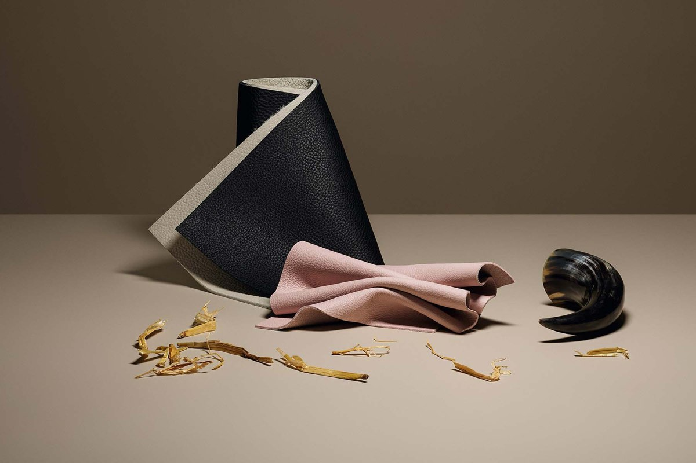

Leathers
Discover the warmth, grain and evolving character of leather.
Textures. Colors. Character.
A palette inspired by nature. Discover leather, fabric, wood and stone, and the character each material brings to a space.

Discover the warmth, grain and evolving character of leather.
Textures and colors that bring softness into a room.
Explore additional fabric choices for the collection.
Natural grain and a tactile surface, shaped by craftsmanship.
Distinct patterns in stone, marble and other mineral surfaces.
Finishes in metal, glass and other surface materials.
Explore combinations of natural colors and textures.
See materials in the context of living spaces.
Answers to questions about materials, care and samples.
Compare the textures and colors here, then see the real samples at a showroom. Screen colors are a guide.
Use the official material FAQ and care instructions for your specific product and finish.
Official material FAQContact the official team or a retailer to discuss sample availability.
Find a showroom